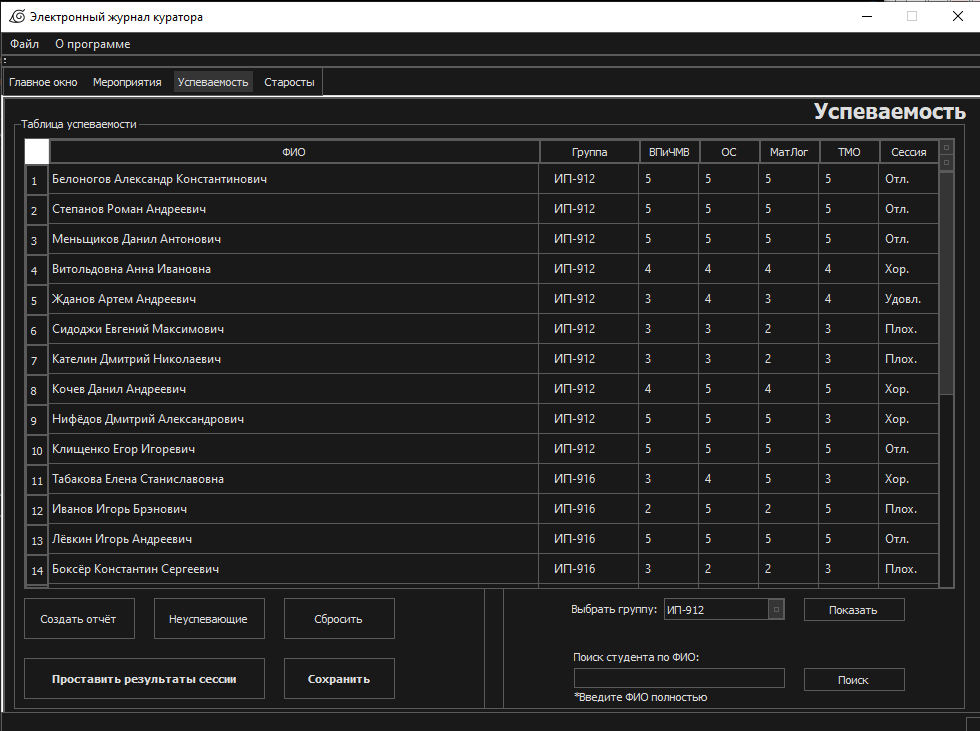
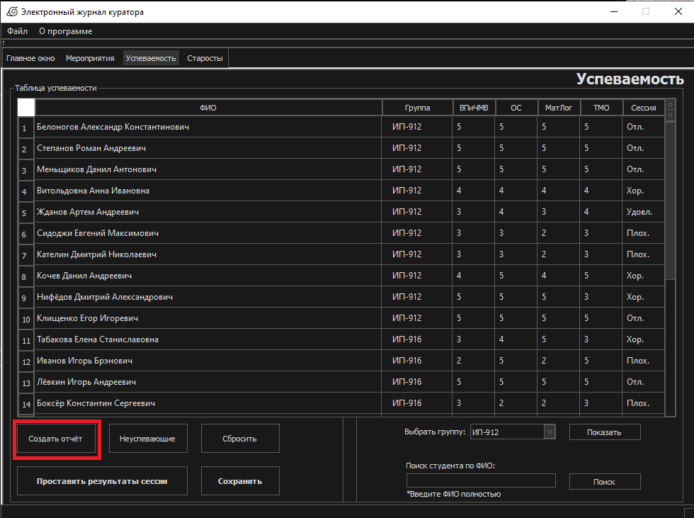
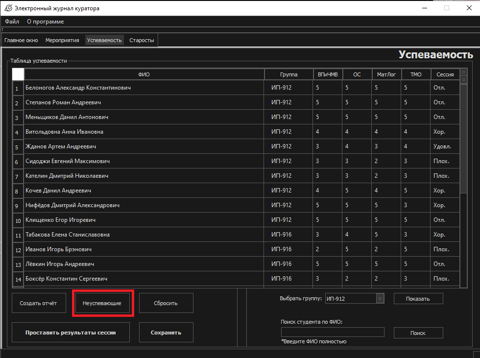
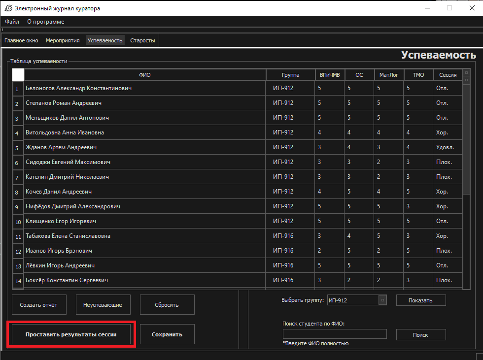
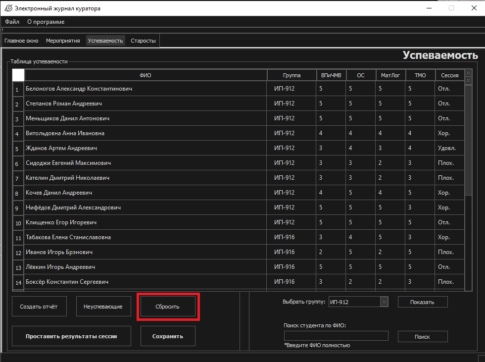

Успеваемость

1. Создать отчёт

Открывается диалоговое окно для выбора директории, где будет сохранен PDF-файл. В этом файле будут студенты, чьё поле сессия содержит отметку “Плох.”, то есть
неуспевающие. Студент считается неуспевающим, если хотя бы по
одному предмету у него выставлена 2
2. Неуспевающие

Оставляет в таблице только тех студентов,
чьё поле “Сессия” содержит отметку “Плох.”.
3. Проставить результаты сессии

После того, как оценки по
всем предметам будут выставлены – необходимо нажать эту кнопку.
Она автоматически посчитает среднюю оценку и проставит поле
“Сессия” на основе заложенных мною в программу критериев.
4. Сохранить
Сохраняет заполненную таблицу в .csv файл.
То есть его можно потом самостоятельно отредактировать или кому�нибудь отправить для просмотра. В моём случае – он считывается
программой при запуске, чтобы таблица не стала снова пустой.
Таблица, кстати, создается программно, а не запросом.
5. Выбрать группу
Заполняется на основе общей таблицы в главном окне. Таким
образом, можно настроить показ студентов в таблице по
определенной, нужной группе.
6. Поиск по ФИО
Необходимо ввести полное ФИО студента и начать поиск.
7. Сбросить

Кнопка “Сбросить” возвращает таблицу в исходное состояние, до
фильтров, поисков и прочего.